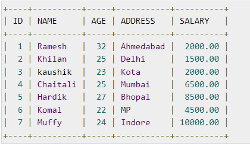

SQL is a database computer language designed for the retrieval and management of data in a relational database. SQL stands for Structured Query Language. This tutorial will give you a quick start to SQL. It covers most of the topics required for a basic understanding of SQL and to get a feel of how it works.
Why to Learn SQL?
SQL is Structured Query Language, which is a computer language for storing, manipulating and retrieving data stored in a relational database.
SQL is the standard language for Relational Database System. All the Relational Database Management Systems (RDMS) like MySQL, MS Access, Oracle, Sybase, Informix, Postgres and SQL Server use SQL as their standard database language.
Also, they are using different dialects, such as −
-
MS SQL Server using T-SQL,
-
Oracle using PL/SQL,
-
MS Access version of SQL is called JET SQL (native format) etc.
SQL Process. When you are executing an SQL command for any RDBMS, the system determines the best way to carry out your request and SQL engine figures out how to interpret the task.There are various components included in this process. These components are −Query Dispatcher, Optimization Engines, Classic Query Engine and SQL Query Engine, etc.
A classic query engine handles all the non-SQL queries, but a SQL query engine won't handle logical files.
RDBMS stands for Relational Database Management System. RDBMS is the basis for SQL, and for all modern database systems like MS SQL Server, IBM DB2, Oracle, MySQL, and Microsoft Access. A Relational database management system (RDBMS) is a database management system (DBMS) that is based on the relational model as introduced by E. F. Codd.
What is a table? The data in an RDBMS is stored in database objects which are called as tables. This table is basically a collection of related data entries and it consists of numerous columns and rows. Remember, a table is the most common and simplest form of data storage in a relational database. The following program is an example of a CUSTOMERS table −

MySQL
MySQL is an open source SQL database, which is developed by a Swedish company – MySQL AB. MySQL is pronounced as "my ess-que-ell," in contrast with SQL, pronounced "sequel." MySQL is supporting many different platforms including Microsoft Windows, the major Linux distributions, UNIX, and Mac OS X. MySQL has free and paid versions, depending on its usage (non-commercial/commercial) and features. MySQL comes with a very fast, multi-threaded, multi-user and robust SQL database server.
MySQL Server
MS SQL Server is a Relational Database Management System developed by Microsoft Inc. Its primary query languages are −T-SQL and ANSI SQL
ORACLE
It is a very large multi-user based database management system. Oracle is a relational database management system developed by 'Oracle Corporation'.Oracle works to efficiently manage its resources, a database of information among the multiple clients requesting and sending data in the network. It is an excellent database server choice for client/server computing. Oracle supports all major operating systems for both clients and servers, including MSDOS, NetWare, UnixWare, OS/2 and most UNIX flavors.
MS Access
This is one of the most popular Microsoft products. Microsoft Access is an entry-level database management software. MS Access database is not only inexpensive but also a powerful database for small-scale projects.MS Access uses the Jet database engine, which utilizes a specific SQL language dialect (sometimes referred to as Jet SQL). MS Access comes with the professional edition of MS Office package. MS Access has easyto-use intuitive graphical interface.
SQL is followed by a unique set of rules and guidelines called Syntax. This tutorial gives you a quick start with SQL by listing all the basic SQL Syntax.All the SQL statements start with any of the keywords like SELECT, INSERT, UPDATE, DELETE, ALTER, DROP, CREATE, USE, SHOW and all the statements end with a semicolon (;).The most important point to be noted here is that SQL is case insensitive, which means SELECT and select have same meaning in SQL statements. Whereas, MySQL makes difference in table names. So, if you are working with MySQL, then you need to give table names as they exist in the database.
SQL Data Type is an attribute that specifies the type of data of any object. Each column, variable and expression has a related data type in SQL. You can use these data types while creating your tables. You can choose a data type for a table column based on your requirement.
SQL Server offers six categories of data types for your use which are listed below −

An operator is a reserved word or a character used primarily in an SQL statement's WHERE clause to perform operation(s), such as comparisons and arithmetic operations. These Operators are used to specify conditions in an SQL statement and to serve as conjunctions for multiple conditions in a statement. Arithmetic operators, Comparison operators, Logical operators, and Operators used to negate conditions.


An expression is a combination of one or more values, operators and SQL functions that evaluate to a value. These SQL EXPRESSIONs are like formulae and they are written in query language. You can also use them to query the database for a specific set of data.
Syntax
Consider the basic syntax of the SELECT statement as follows −
SELECT column1, column2, columnN
FROM table_name
WHERE [CONDITION|EXPRESSION];
Boolean Expressions
SQL Boolean Expressions fetch the data based on matching a single value. Following is the syntax
SELECT column1, column2, columnN
FROM table_name
WHERE SINGLE VALUE MATCHING EXPRESSION;
The SQL CREATE DATABASE statement is used to create a new SQL database.
Syntax
The basic syntax of this CREATE DATABASE statement is as follows −
CREATE DATABASE DatabaseName;
Always the database name should be unique within the RDBMS.
Example
If you want to create a new database , then the CREATE DATABASE statement would be as shown below −
SQL> CREATE DATABASE testDB;
Make sure you have the admin privilege before creating any database. Once a database is created, you can check it in the list of databases as follows −
SQL> SHOW DATABASES;
+--------------------+
| Database |
+--------------------+
| information_schema |
| AMROOD |
| TUTORIALSPOINT |
| mysql |
| orig |
| test |
| testDB |
+--------------------+
7 rows in set (0.00 sec)